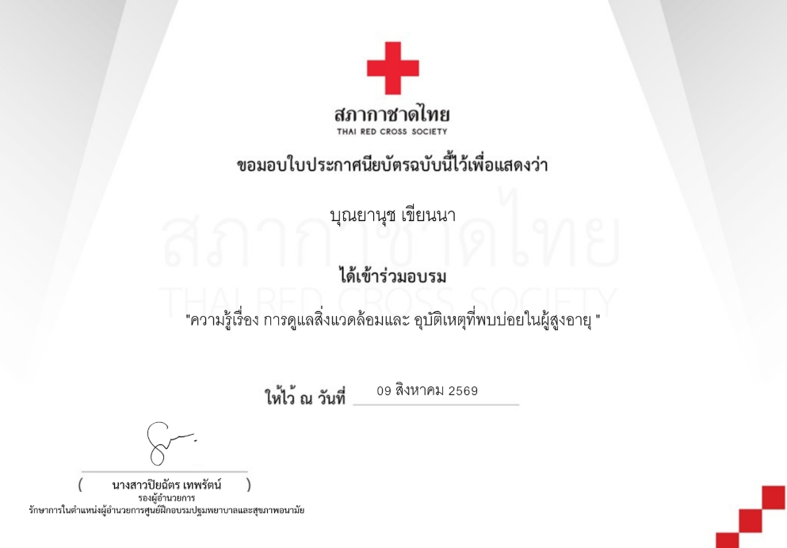
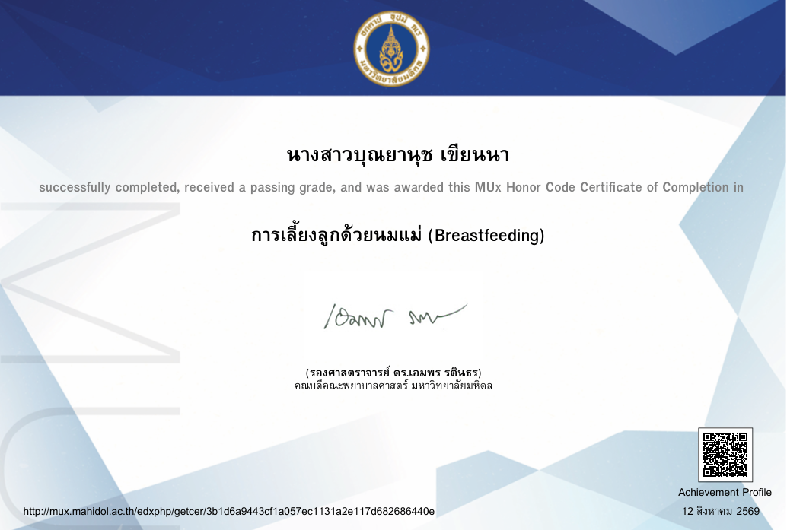
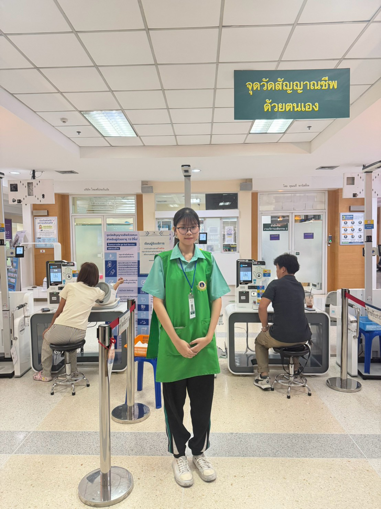
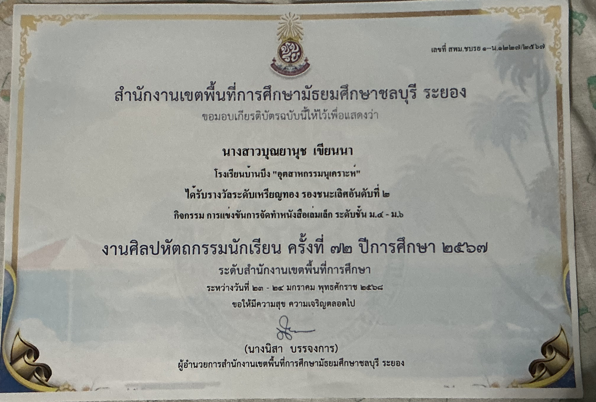
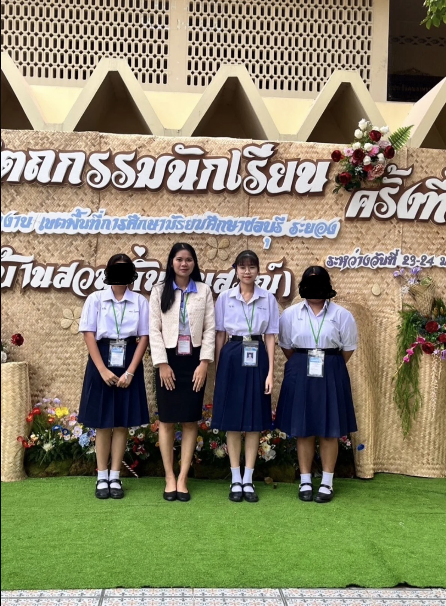
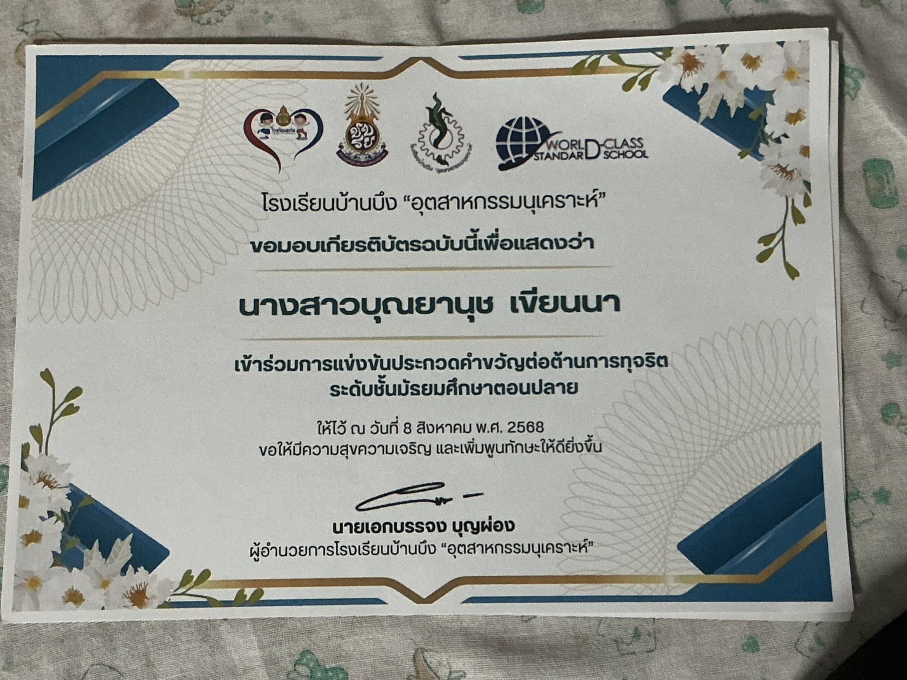
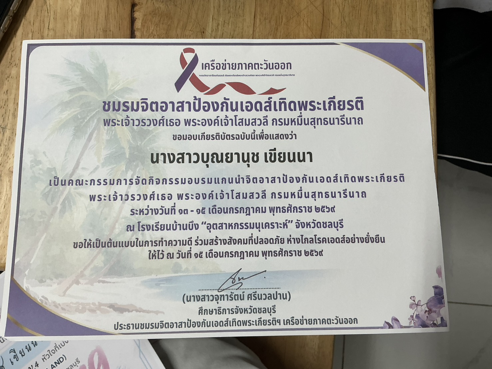
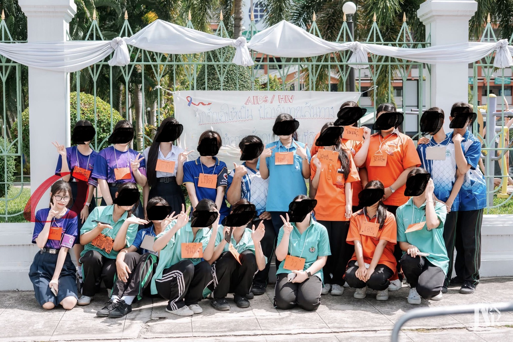
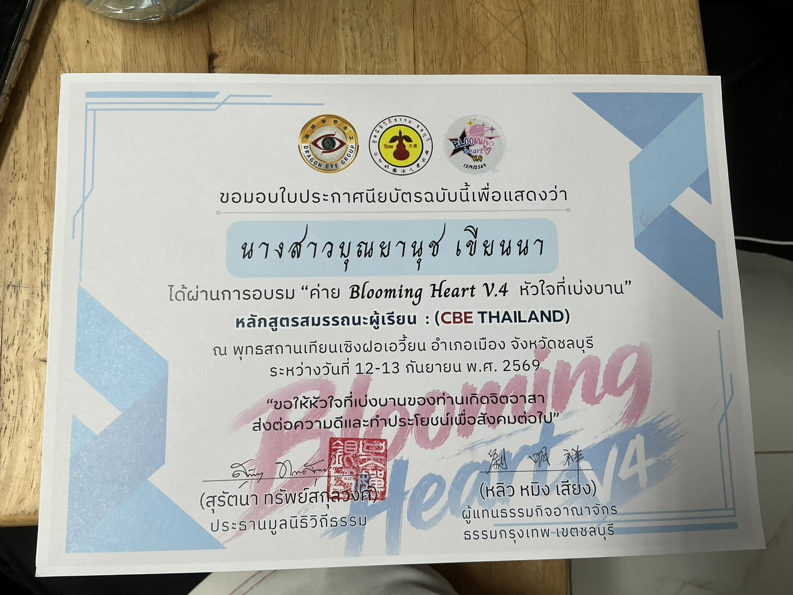
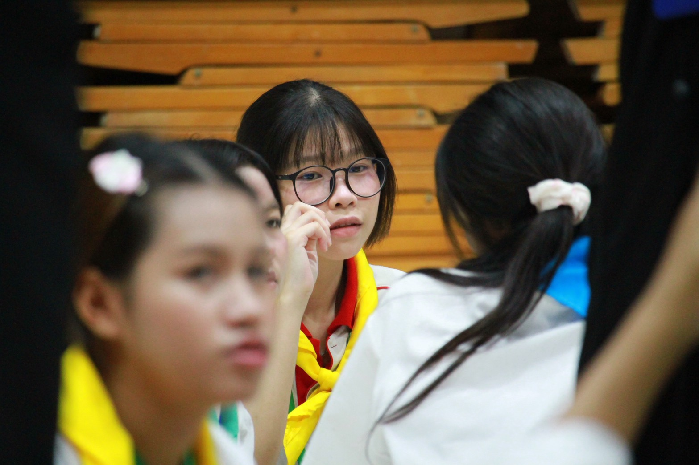

ผลงานและกิจกรรม

กิจกรรมที่ 1
ได้รับเกียรติบัตรจากการเรียนล่วงหน้าของ MU X MOOC เรื่องเพศวิถีและการให้คำปรึกษา ทางเพศสำหรับวัยรุ่น ได้รับเมื่อวันที่ 11 สิงหาคม 2569
สิ่งที่ได้รับ : การดูแลและป้องกันตัวเองจากสถานการณ์ต่าง ๆ จากการมีเพศสัมพันธ์ในวัยรุ่น

กิจกรรมที่ 2
ได้รับเกียรติบัตรจากสภากาชาดไทย หลักสูตรการดูแลผู้ป่วยเบื้องต้นที่บ้าน (Online) ได้รับเมื่อวันที่ 3 สิงหาคม 2569
สิ่งที่ได้รับ : การดูแลผู้ป่วยติดเตียงด้วยตนเองที่บ้าน ให้สะอาดและปลอดภัย

กิจกรรมที่ 3
ได้รับเกียรติบัตรจากสภากาชาดไทย ได้เข้าร่วมอบรมความรู้เรื่อง Stroke โรคหลอดเลือดสมอง ภัยเงียบใกล้ตัว (ออนไลน์) ได้รับเมื่อวันที่ 9 สิงหาคม 2569
สิ่งที่ได้รับ : การสังเกตตนเองและคนรอบข้าง เพื่อเฝ้าระวังจากโรค Stroke

กิจกรรมที่ 4
ได้รับเกียรติบัตรจากสภากาชาดไทย ได้เข้าร่วมอบรมความรู้เรื่อง การดูแลสิ่งแวดล้อมและอุบัติเหตุ ที่พบบ่อยในผู้สูงอายุ ได้รับเมื่อวันที่ 9 สิงหาคม 2569
สิ่งที่ได้รับ : การสังเกตรอบบ้านและเฝ้าระวัง ไม่ให้คนสูงอายุในบ้านได้รับบาดเจ็บ จากสิ่งที่อาจมองข้ามใกล้ตัว

กิจกรรมที่ 5
ได้รับเกียรติบัตรจากสภากาชาดไทย หลักสูตรการบริจาคอวัยวะและเนื้อเยื่อ ได้รับเมื่อวันที่ 9 สิงหาคม 2569
สิ่งที่ได้รับ : การบริจาคอวัยวะและเนื้อเยื่อให้ถูกวิธี เพื่อให้มีประสิทธิภาพมากที่สุด

กิจกรรมที่ 6
ได้รับเกียรติบัตรจากสภากาชาดไทย ได้เข้าร่วมอบรมความรู้เรื่อง Heat Stroke โรคลมแดด คร่าชีวิต (ออนไลน์) ได้รับเมื่อวันที่ 9 สิงหาคม 2569
สิ่งที่ได้รับ : การระวังตัวเองจากโรค Heat Stroke โรคลมแดด

กิจกรรมที่ 7
ได้รับเกียรติบัตรจากการเรียนล่วงหน้าของ MU X MOOC เรื่องการเลี้ยงลูกด้วยนมแม่ (Breastfeeding) ได้รับเมื่อวันที่ 12 สิงหาคม 2569
สิ่งที่ได้รับ : ประโยชน์จากการให้นมแม่ และข้อดีข้อเสียต่าง ๆ

กิจกรรมที่ 8
รูปภาพการทำงานจิตอาสาในโรงพพยาบาลรามาธิบดี โดยระยะเวลาทำงานคือ 4 วันต่อเดือน และทำงานวันละ 5 ชั่วโมง
วันที่ : 14 กันยายน 2569
สิ่งที่ได้รับ : ข้าพเจ้าได้ทำจิตอาสาที่โรงพยาบาลรามาธิบดีและได้คอยช่วยเหลือคนไข้ ในการใช้เครื่องมืออัตโนมัติ รวมถึงได้ช่วยบอกทางและช่วยแนะนำหรือ ไขข้อสงสัยของคนไข้

กิจกรรมที่ 9
ได้รับเกียรติบัตรจากสำนึกงานเขตพื้นที่การศึกษามัธยมศึกษาชลบุรี ระยอง ได้รับรางวัลระดับเหรียญทอง รองชนะเลิศอันดับที่ 2 จากกิจกรรม การแข่งขันการจัดทำหนังสือเล่มเล็ก ระดับชั้น ม.4-ม.6 งานศิลปหัตถกรรมนักเรียน ครั้งที่ 72 ปีการศึกษา2568
วันที่ : 23-24 มกราคม 2568
สิ่งที่ได้รับ : การทำงานเป็นทีมและการวางแผนรวมถึงการสื่อสารกับคนในทีม เพื่อให้งานออกมาดีที่สุด

กิจกรรมที่ 10
รูปจากกิจกรรม การแข่งขันการจัดทำหนังสือเล่มเล็ก งานศิลปหัตถกรรมนักเรียน ครั้งที่ 72 ปีการศึกษา 2568

กิจกรรมที่ 11
ได้รับเกียรติบัตรจากโรงเรียนบ้านบึงอุตสาหกรรมนุเคราะห์ เนื่องจากได้เข้าร่วมการแข่งขันประกวดคำขวัญต่อต้านการทุจริต ระดับชั้นมัธยมศึกษาตอนปลาย
วันที่ : 8 สิงหาคม 2568
สิ่งที่ได้รับ : ความคิดสร้างสรรค์และการทำงานเป็นทีมกับคู่ของเรา

กิจกรรมที่ 12
ได้รับเกียรติบัตรจากการเป็นคณะกรรมการ จัดกิจกรรมอบรมแกนนำจิตอาสาป้องกันเอดส์ เทิดพระเกียรติพระเจ้าวรวงศ์เธอ พระองค์เจ้าโสมสวลี กรมหมื่นสุทธนารีนาถ ณ โรงเรียนบ้านบึง "อุตสาหกรรมนุเคราะห์"
วันที่ : 13 - 15 กรกฎาคม 2569
สิ่งที่ได้รับ : ข้าพเจ้าได้ทำจิตอาสาและรับความรู้เรื่องเอดส์ ทั้งในการป้องกันและวิธีรักษาตนเอง ให้ห่างไกลจากโรคเอดส์

กิจกรรมที่ 13
รูปตอนทำงานเป็นคณะกรรมการ จัดกิจกรรมอบรมแกนนำจิตอาสาป้องกันเอดส์ เทิดพระเกียรติพระเจ้าวรวงศ์เธอ พระองค์เจ้าโสมสวลี กรมหมื่นสุทธนารีนาถ ณ โรงเรียนบ้านบึง "อุตสาหกรรมนุเคราะห์"

กิจกรรมที่ 14
ได้รับจากการผ่านการอบรมค่าย Blooming Heart V.4 หัวใจที่เบ่งบาน หลักสูตรสมรรถนะผู้เรียน CBE THAILAND ณ พุทธสถานเทียนเซิงฝอเอวี้ยน อำเภอเมือง จังหวัดชลบุรี
วันที่ : 12-13 กันยายน 2569
สิ่งที่ได้รับ : การเข้าสังคมและได้พบเจอเพื่อนใหม่ รวมถึงการทำงานเป็นทีม ภาวะการเป็นผู้นำ กล้าแสดงออก ฝึกการบริหารจัดหารเวลา

กิจกรรมที่ 15
รูปจากกิจกรรมค่าย Blooming Heart V.4 หัวใจที่เบ่งบาน 2 วัน 2 คืน หลักสูตรสมรรถนะผู้เรียน CBE THAILAND ณ พุทธสถานเทียนเซิงฝอเอวี้ยน อำเภอเมือง จังหวัดชลบุรี